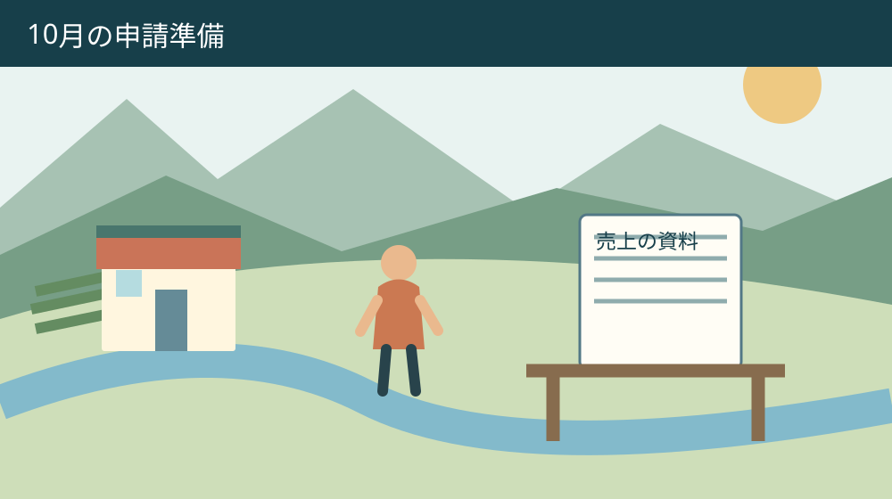
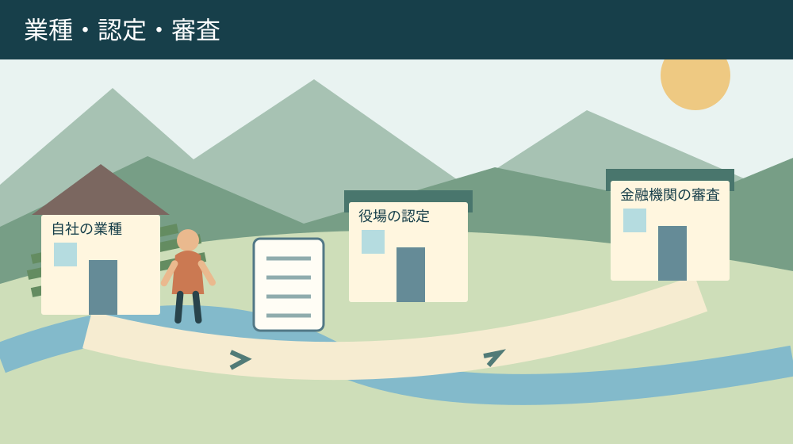

手続き・相談・家族の段取り
森町のセーフティネット保証5号｜10月の申請準備
Q. 10月の保証5号申請は、何から準備すればいい？
A. 森町のセーフティネット保証5号は、10月1日～12月31日の指定業種一覧で自社の業種番号を確認するところから始めます。町の認定と金融機関・信用保証協会の審査は別です。認定書は発行日から起算して30日有効。今日は業種番号を確かめ、使う様式と必要書類を町へ相談してください。
売上の落ち込みと、申請の時間を分けて考える
森町で商売を続ける人は、仕入れ、給与、店や設備の維持費を払いながら、売上の落ち込みにも向き合っています。閉店後に帳簿を開き、家族の予定を調整して金融機関へ行く。その時間も経営の負担です。支援制度を紹介するとき、書類をそろえる手間を軽く扱いたくありません。
2026年9月28日に森町公式の「セーフティネット保証制度5号認定について」を確認しました。10月1日から12月31日までの指定業種一覧へのリンクが掲載されています。9月末までの一覧も併記されているため、一覧を見つけたことより、申請を相談する時期と対象期間が合うかが先です。
私は大石浩之（磐田市／不動産業）です。この記事では融資商品を勧めるのではなく、業種の確認、町の認定、融資・保証の審査を分けます。店を残すか、設備投資を延期するかという経営判断の前に、相談の材料を整理するための案内です。
森町で店や作業場が続くことは、働く場所と建物の維持にもつながります。ただし地域のためだからと、経営者だけに追加の借入れを求めることはできません。今日は自社の業種番号を確かめる。その一歩なら、借りると決める前にも始められます。
森町のセーフティネット保証5号は認定と審査が別
森町の説明によると、セーフティネット保証5号は、業況が悪化している業種に属する中小企業者への資金供給を支える制度です。信用保証協会が、通常の保証限度額とは別枠で80％保証を行います。町が事業者に資金を給付する制度として読むと、入口から判断がずれます。
町の認定を取得しても、融資の実行には金融機関と信用保証協会による別の審査があります。認定書は借入れが決まった通知ではありません。80％という数字も、事業者の返済が80％免除される意味ではありません。返済条件は金融機関へ確認する事項です。
町の認定書の有効期間は、発行の日から起算して30日です。私は、この30日を「先に取っておけば安心」と読むべきではないと考えます。書類をいつ用意し、金融機関へいつ持ち込むかを相談してから、認定申請の段取りを組む方が、取り直しの負担を抑えられます。
10月からの指定業種一覧があることと、自社が対象になることも別です。今回の記事では個別業種の該当可否を確定していません。業種名が似ているだけで判断せず、実際の事業内容と業種番号を対応させ、町の産業振興係へ確認してください。
10月の一覧を見る前に自社の事業を言葉にする
森町公式ページには、2026年7月1日から9月30日までと、10月1日から12月31日までの指定業種一覧が並んでいます。10月の申請準備では、対象期間の表題を先に読みます。以前保存した一覧を使う場合も、保存日ではなく適用期間を確認します。
自社の業種を調べるときは、店の看板だけでなく、何を誰に提供して売上を得ているかを書きます。製造と販売、店舗と別のサービスなど、複数の事業があれば分けます。これは町の指定様式ではなく、業種番号を問い合わせるための準備メモです。
「売上の中心はこの事業だが、別の仕事も受けている」という場合は、兼業の内容も省きません。指定業種に当たる事業だけを切り出して、会社全体の条件まで満たしたと思い込まないためです。業種の分け方が分からなければ、その不明点をそのまま窓口へ渡します。
私は申請書を最初から完成させるより、業種番号の候補と事業内容の対応を一行で説明できる状態を勧めます。違う様式で売上を集計し直す方が、忙しい商売には重いからです。番号が決まらなければ、問い合わせた日と確認待ちの項目だけ残して構いません。

売上高の様式は事業の組合せで変わる
森町が掲載する売上高様式イ-1は、指定事業のみを営む場合の類型です。指定事業内の兼業も含み、事業者全体の直近3か月の売上高等が前年同期比で5％以上減少していることが条件です。「一つの事業しか営んでいない会社専用」と読むのは正確ではありません。
指定事業と非指定事業を営む場合は、町のイ-2の説明を確認します。指定事業の売上高が全体の5％以上を占める条件に加え、全体と指定事業それぞれの売上減少を確認する仕組みです。自社にどの様式を使うかは、業種確認と一緒に相談します。
「直近3か月」に何月を入れるかは、申請時期と資料の準備状況を伝えて窓口に確かめます。本記事で2026年の特定の3か月を一律に指定しません。対象月が決まったら、2025年の同じ期間と並べ、期間の長さが違う数字を比べないようにします。
町には創業者向け、原油高、利益率に関する別様式も掲載されています。売上高の条件だけで対象外と自己判断する前に、どの類型を確認すべきか質問できます。ただし別様式があることを、必ず利用できるという説明には置き換えられません。
必要書類は四つの役割に分けて集める
森町公式の申請書類は、認定申請書1通、認定要件確認書類、町内で事業を営むことを証明する書類、売上高等の証明書類です。まず四つの見出しだけをメモに作り、手元の資料がどこに当たるかを整理します。提出資料の最終判断は町へ確認します。
町内で事業を営むことの証明として、登記簿謄本の写しや確定申告書の写しが例示されています。法人か個人か、事業所がどこにあるかで、手元の資料は違います。例示されたものを全部取得する前に、自社に必要な組合せを聞くと無駄な取得を避けられます。
売上高等の証明には、損益計算書、決算書、試算表などが例示されています。年の合計だけが分かる資料と、対象月ごとの売上が分かる資料を混ぜないようにします。帳簿を税理士等へ預けている場合は、必要な対象月を確認してから依頼します。
町の留意事項では、売上高等は根拠資料と同じ金額を1円単位まで記載します。数値の記載には小数点第二位以下を切り捨て、第一位までとする案内もあります。割合と金額を同じ感覚で丸めず、申請書の欄と根拠資料を見比べて確認します。
私は資料一覧に「ある・依頼中・不明」の三つだけ印を付ける方法を提案します。全部をそろえてから電話しようとすると、様式の選択が違ったときに戻りが生じます。不明点が一つ分かった時点で、確認先に聞ける状態を作るのが目的です。
良い点は10月の準備を9月に始められること
森町の案内の良い点は、指定業種の切替前に次の期間の一覧へ進めることです。事業者が金融機関への相談前に、業種を確かめる入口になります。対象期間を二つ並べる表示は、9月と10月をまたぐ準備で、どちらを見ているか意識する助けになります。
必要書類の役割と資料例が掲載され、売上高以外の様式も分かれています。私は、電話する前に何を探せばよいか見える点を評価します。町の担当者と事業者が同じ様式名で話せれば、説明を一から繰り返す時間も減らせると考えます。
認定と融資審査が別だと明記していることも、事業者にとって必要な情報です。借入れを見込んで支払いを約束した後に、審査が残っていると知る状況を避けられます。希望額や希望日を伝えることと、入金を確定した予定として扱うことは区別します。
設備の更新も考えている場合、森町には別に「先端設備等導入計画」の案内があります。設備投資を通じた生産性向上の計画で、保証5号の申請とは別です。資料の整理は先端設備等導入計画の記事も参照し、二つの認定書を混同しないようにします。
注文したい点は資金が必要な日まで見通せる案内
セーフティネット保証5号の案内だけでは、個別案件の認定所要日数、審査期間、融資実行日までは確定できません。私は、制度説明と一緒に、今どこへ何を聞けば次の予定を組めるかが見える案内を望みます。担当者への不満ではなく、事業者の時間を守るための注文です。
「30日有効なら、その間に資金が入る」とは読めません。金融機関には必要な資金の使途と希望日、町には認定に必要な資料と交付までの確認事項を聞きます。制度に期限があっても、経営者の支払期日が自動的に延びるわけではないからです。
借入額、返済期間、金利、保証料などは今回確認した町本文だけで決まりません。希望額を先に固定するか、月ごとの不足額を見てから相談するか、私にも個別の帳簿を見ずには決められません。その迷いを消すために、根拠となる収支を並べます。
町税の支払いも重なる場合は、森町の町税納付方法の記事で手段を確認できます。ただし納付方法を変えることと、支払いの相談は別です。資金の見通しが立たない項目を、入金予定で埋めて帳尻だけ合わせないようにします。

対案・結論：今日は業種番号を一つ確かめる
森町で10月の保証5号申請を準備する今日の一歩は、自社の業種番号を一つ確認することです。事業内容を一文にし、10月1日から12月31日の一覧を開きます。該当判断が難しければ、産業振興係の0538-85-6319へ、事業内容と確認したい期間を伝えます。
電話の準備メモには、主な事業、兼業の有無、相談したい申請時期、売上資料の有無を置きます。「対象ですか」だけでなく、「この事業の業種番号と使う様式を確認したい」と伝えます。申請書の記入前に解消すべき疑問を一つに絞る提案です。
金融機関へは、町の認定を相談中であること、資金が必要な時期、使途、既存借入れの状況を伝えます。資料の提出方法や担当者との面談方法も確認します。役場へ行く日と金融機関へ行く日を同じ日にできるかは、相手の予約状況を確かめてから決めます。
申請を急ぐほど、原本、提出用の写し、社内保管用の控えが混ざりがちです。私は提出先ごとの封筒かフォルダーを用意し、渡した資料名と日付を残す方法を勧めます。町が指定する手順ではありませんが、追加資料を求められたときの確認が楽になります。
家族と後継者に残すのは借入判断の根拠
事業の資金繰りを家族や後継者と共有する場合、相談先、対象期間、必要書類、確認待ちの事項を残します。決算書や個人情報を関係者全員に送る必要はありません。経営判断をする人と、資料を取りに行く人が違う場合は、共有する範囲を分けます。
店や作業場を所有している場合も、借入れの準備と不動産を売る判断を直結させません。維持費、使用状況、名義などを別に整理し、どの支出が事業の継続に必要かを確認します。相談のための資料整理が、売却への同意と受け取られないようにします。
家計にも収入減の影響がある場合は、森町の暮らしの相談窓口の記事が別の入口になります。事業融資と生活の相談では、対象も窓口も異なります。同じ一枚で全部を解決しようとせず、困りごとの性質を分けて伝えます。
共有メモの終わりには、次に連絡する人と日を一つ書きます。認定を申し込んだか、審査が始まったか、融資が実行されたかを別欄にすれば、家族が途中の段階を完了と誤解しません。担い手が交代しても説明できる記録を残すことが狙いです。
大石の視点：制度より先に商売の段取りを見る
私は、制度を知っただけでは商売の負担は減らないと考えます。店を開ける人が書類を探し、その間の仕事を家族が引き受けるなら、手続きにも人手が要ります。業種確認から始める提案は、借入れを増やすためではなく、やり直しを減らすためです。
私なら、机の上に「業種」「売上資料」「資金が必要な日」の三枚を置いて考えます。これは実際に受けた相談の再現ではなく、段取りについての私の意見です。金額だけ先に書くと、対象条件と期限の確認が後ろへ押しやられる。その順番は変えたいと思います。
森町の店が続く余地は、経営者の我慢だけで支えたくありません。一方で、保証が付けばどの借入れもよいとも言えません。私は返せる見通しと働く人の負担を分けて確かめ、条件が合わなければ別の方法を相談できる状態を、今日の成果にしたいと考えます。
10月の準備は、業種番号と対象期間の照合からです。町の認定と金融機関・信用保証協会の審査を分け、認定書の30日を相談日程へ落とし込みます。分からない条件を一つ減らすことが、資金繰りの判断を急がせずに進める一歩になります。
よくある質問
森町のセーフティネット保証5号について、申請前に間違えやすい条件を整理します。回答は2026年9月28日に確認した町公式案内に基づき、個別事業者の認定や融資を保証するものではありません。
森町の認定があれば融資を受けられますか？
町の認定とは別に、金融機関と信用保証協会の審査があります。認定取得だけで融資の実行、金額、日付は確定しません。認定書の有効期間は発行日から起算して30日です。資金が必要な時期と用意できる資料を金融機関へ伝え、町への申請時期も相談してください。80％保証を返済免除と受け取らないことも必要です。
10月の指定業種に自社が入るかはどう調べますか？
森町公式ページから2026年10月1日～12月31日の指定業種一覧を開き、実際の事業内容に対応する業種番号を確認します。9月末までの一覧とは適用期間が違います。兼業がある場合は事業を分け、使う様式も町へ相談してください。本記事では個別業種の該当可否を確定していません。
申請前にはどんな書類を探せばよいですか？
町は認定申請書1通、認定要件確認書類、町内で事業を営む証明、売上高等の証明を案内しています。登記簿謄本や確定申告書の写し、損益計算書、決算書、試算表などが例です。全部を一律に集める前に、業種と使う様式、対象月を確認し、自社に必要な資料を産業振興係へ問い合わせてください。
公式情報源
2026年9月28日確認。制度・金額・日程は変更される場合があります。個別の適用は担当窓口へ、融資や医療などの専門判断は各専門機関へ確認してください。